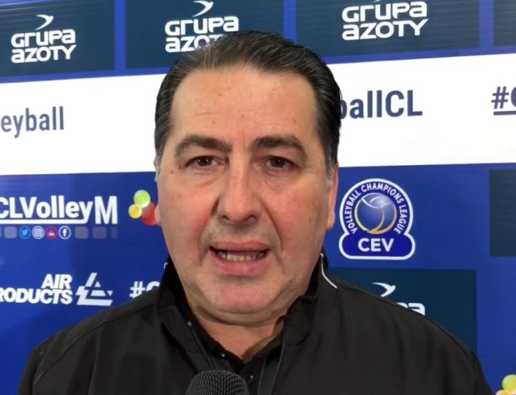

L'allenatore: Ferdinando De Giorgi
Ferdinando De Giorgi, detto Fefè, è nato a Squinzano (LE) il . Terminata la carriera di pallavolista, più precisamente di palleggiatore, è diventato allenatore e attualmente è commissario tecnico della nazionale italiana.
Fefè De Giorgi è sposato con sua moglie Maria da 33 anni e ha due figli, Federico e Irene.
Nel corso degli anni ottanta e novanta ha fatto parte della cosiddetta “generazione di fenomeni” della nazionale italiana, con cui ha vinto un campionato europeo (1989) e tre campionati mondiali di fila (dal 1990 al 1998). Invece nel 1991 si è fermato all’argento in Giappone. Nel 1989 ha conquistato il secondo posto nella Coppa del Mondo. E’ insignito del collare d’oro per merito sportivo, ricevuto nel 1998. Anche con i club ha conquistato numerose vittorie in diversi campionati.
E’ laureato in scienze motorie. Dal 2019, inoltre, tiene il corso di "Teoria tecnica e didattica degli sport di squadra" nel corso di studi in scienze della attività motorie e sportive presso l'Università degli Studi di Foggia. Ha scritto anche dei libri.
Ha iniziato ad allenare nel 2000, a Cuneo, dove fino al 2002 ricopre il ruolo di allenatore-giocatore. Successivamente, nella stagione 2002/03, inizia ad allenare a tempo pieno.
Dal 2018 al 2021 ha allenato la squadra italiana Cucine Lube Civitanova, ma nel suo curriculum vanta anche esperienze con squadre estere (è stato addirittura selezionato come allenatore della nazionale polacca nel 2017).
Dal 2021 allena l’Italia, portandola a vincere il titolo di campionessa europea e mondiale, titolo che l’Italia aveva conquistato altre 3 volte, proprio con la squadra in cui giocava lo stesso Fefè.